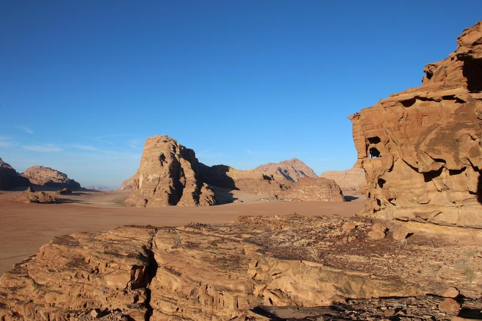

Ценапо запросуДлительностьПод ваши планыНачалоГибкий график
Не можете выбрать что-то одно? Расскажите, сколько у вас времени и чем хотите заняться, и мы составим для вас программу: джип-тур, долгие пешие походы, восхождения, прогулки на верблюдах, сэндбординг или всё сразу.
Мы пришлём цену вашей программы в WhatsApp.
Что входит
- Программа, составленная для вас
Занятия на выбор
- Джип-тур
- Долгие пешие походы
- Восхождения в горы
- Прогулки на верблюдах
- Сэндбординг
Вам также может понравиться
برامج أخرى
Джип-тур на целый день + ночёвка
Весь Вади-Рам за один день: красные дюны, каньоны и смотровые точки, со временем на прогулки, подъёмы и фото.
От 40 JOD ≈ 56 $с человека, группа от 3 чел.Подробнее →

Джип-тур на полдня + ночёвка
Послеобеденная поездка по самым известным местам Вади-Рама, затем закат, ужин и ночь в лагере.
От 35 JOD ≈ 49 $с человека, группа от 3 чел.Подробнее →

3-часовой джип-тур + ночёвка
Мало времени? 3-часовая поездка по самым красивым местам пустыни, закат, ужин и ночь в лагере.
От 30 JOD ≈ 42 $с человека, группа от 2 чел.Подробнее →